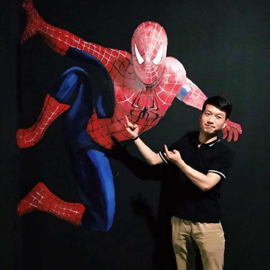

<style>
	#latest-repos-container h2 {
		margin-bottom: 2rem;
	}

	#latest-repos h4 {
		margin-bottom: 0.5rem;
	}
</style>

<section class="hero is-fullheight is-default">
	<div class="hero-body">
		<div id="info-container" class="container has-text-centered">
			<div class="columns is-vcentered">
				<div class="column is-two-thirds is-centered has-nice-link" itemscope itemtype="http://schema.org/Person">
					
					<h1 class="title is-2" itemprop="name">John Kuo</h1>
					<h2 class="subtitle is-4" itemprop="description">我梦寐以求是真爱＆自由！</h2>
					<p>我目前主要从事Web应用开发；<br class="is-hidden-small-screen"> 主要使用JavaScript、Ruby on Rails、Node.js等开发语言。</p>
					<br>
					<p class="has-text-centered">
						<a class="button is-large is-white" href="https://davidkoojohn.github.io/share/">
							<span class="icon">
								<i class="fa fa-pencil"></i>
							</span>
							<span>Writings</span>
						</a>
						<a class="button is-large is-white" href="https://github.com/davidkoojohn">
							<span class="icon">
								<i class="fa fa-github"></i>
							</span>
							<span>Code</span>
						</a>
						<a class="button is-large is-white" href="https://weibo.com/davidkoojohn">
							<span class="icon">
								
							</span>
							<span>Weibo</span>
						</a>
					</p>
				</div>
			</div>
		</div>
	</div>
</section>
